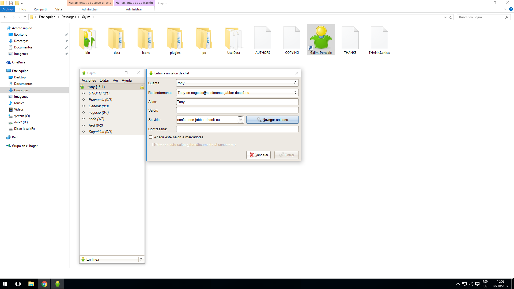
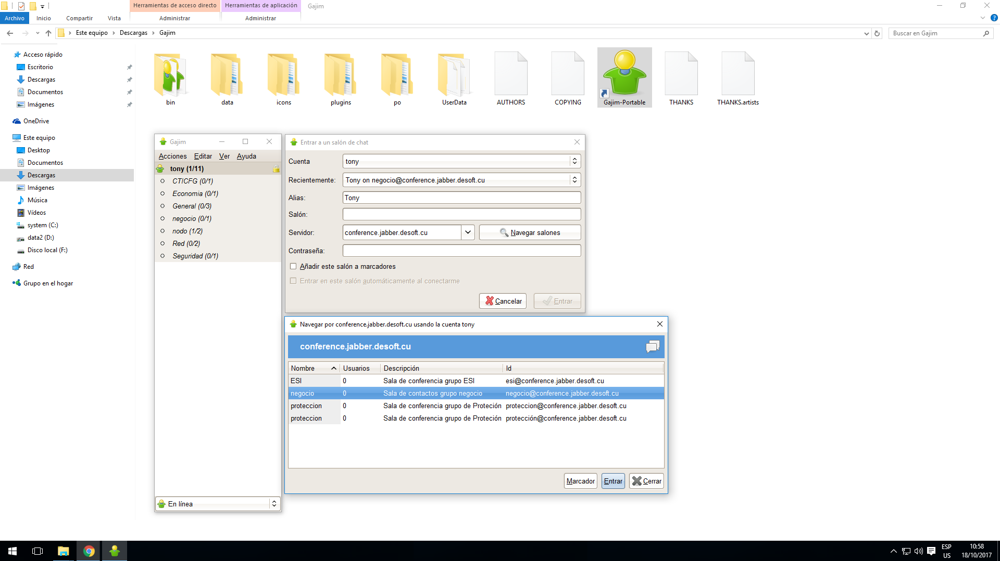

-

Este tutorial describe como unirme a una sala de chat o conferencia creada para un grupo de trabajo de la empresa labiofam a nivel nacional.
El primer paso consiste en conectarnos con nuestra cuenta al servicio de chat de la división y una vez en línea, dar clic izquierdo sobre la opción [Acciones] del menú, luego [Entrar a un grupo de charla], y finalmente dar clic izquierdo sobre [Entrar en un nuevo grupo de charla]
-

Como bien puedemos observar en pantalla se nos muestra una ventana flotante donde se nos solicita la información de a qué grupo de charla deseamos conectarnos.
Los tres campos que determinan una conexión exitosa son:
1- [Servidor]: Debemos especificar sin errores el nombre del servidor que publica la sala de charla, en este caso debe ser el servidor de la oficina central [conference.jabber.labiofam.cu]
2- [Salón]: Debemos especificar el nombre de la sala de charla o chat a la que deseamos conectarnos.
3- [Contraseña]: Debemos especificar la clave de acceso para la sala de chat, esto es algo que deben mandarnos los organizadores de la conferencia, al igual que el nombre.
1- Por otra parte, el campo [Alias] determina el nombre con el que nos identifican dentro del grupo de charla, el cual se puede modificar a gusto personal pero como es una conferencia de trabajo se aconseja dejar su nombre completo.
-

En caso de que no estemos seguros del nombre exacto de la sala de chat o si escribimos bien la dirección del servidor, podemos dar clic izquierdo sobre el botón [Navegar salones] para listar todas las salas de chat disponibles en el servidor especificado. Si no hay problemas se debe mostrar una ventana flotante como la que se muestra en pantalla donde se listan las distintas salas de charla activas.
Seleccionamos del listado la que nos interesa y le damos entrar.
-

En este ejemplo seleccionamos la sala de chat denominada [Negocio] y luego damos clic izquierdo sobre el botón [Entrar]
-

Finalmente nos solicita la clave de acceso a través de un cuadro de dialogo sobre una ventana flotante. Si la especificamos bien entonces podríamos entrar y establecer comunicación el resto de los usuarios conectados.